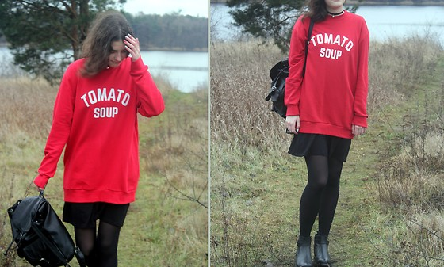

The Soup Gal -- Hey Girl!
We help people around the world to come to Austria and make their favoriate soups!

Combining her passions for healthy eating, animal welfare and food sustainability, the soup gal developed dry soup mixes with the aim of creating healthy, delicious, vegetarian foods that are suitable for busy lifestyles.
A vegetarian since the age of 10, she began experimenting in the kitchen at an early age. Over time she learned to cook nutritious vegetarian meals and maximize flavour by using lots of spices and herbs. Her soup flavours are inspired by her frequent culinary adventures in her own kitchen, as well as in many parts of the world.
Each jar of dry soup mix creates 8 cups of soup – just add water and cook for an hour! There are currently 12 unique and tasty flavours – all filled with simple, wholesome ingredients and featuring Canadian lentils and split peas.
Eat well and enjoy!